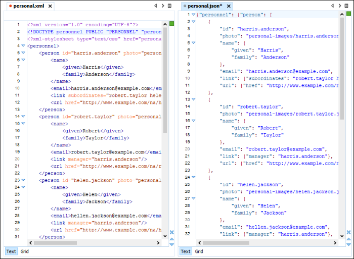

JSON
JSON = JavaScript Object Notation - formatação leve de troca de dados. Uma coleção de pares de chaves e valores, caracterizado como objeto.
Tipos aceitos de valores: string, number, null, array, object.
{
"nome": "Mayã",
"idade": 26,
"emprego": null,
"amigos": ["Nayla", "Marília", "Chrys", "Papai"]
}

Protocolos HTTP
HTTP = HiperText Transference Protocol é o protocolo padrão para a web. É por meio dele que o navegador requisita ao servidor as páginas na web
HTTPS = HiperText Transference Protocol Security, (Criptografado) Adiciona-se ao protocolo HTTP uma camada extra de segurança, o certificado SSL. Este, por sua vez, criptografa o conteúdo transferido e só permite sua leitura a quem tiver uma chave para “abri-lo”
https://http.cat/
Status Response
1xx Informational EX: 100 Continue
2xx Success EX: 200 OK
3xx Redirection EX: 301 Moved Permanently
4xx Client error EX: 400 Bad Request, 403 Forbidden, 404 Not Found
5xx Server errorEX: 500 Internal Server Error, 502 Bad Gateway, 503 Service Unavailable, 504 Gateway Timeout
SCM
Source Code Management. Ex: Git, SVN, TFS.
Orientação a Objetos
https://www.devmedia.com.br/principais-conceitos-da-programacao-orientada-a-objetos/32285
Uma classe é uma forma de definir um tipo de dado em uma linguagem orientada a objeto. Ela é formada por dados e comportamentos.
Para definir os dados são utilizados os atributos, e para definir o comportamento são utilizados métodos.
Com a classe definida, podem ser criados diversos objetos do tipo da classe criada. (Classe classe = new Classe())
Encapsulamento = get set
Associação de Classes = Quando uma classe tem relacionamento com outra (ex: classe Pessoa possui classe Carro ou List)
Herança = Tipo de relacionamento que define que uma classe é do tipo de outra (public class Funcionario : Pessoa)
Tipos de Acesso aos atributos:
1. public: que permite que métodos e atributos sejam acessados diretamente de qualquer classe;
2. private: que permite que métodos e atributos sejam acessados apenas dentro da classe;
3. protected: que permite que métodos e atributos sejam acessados apenas dentro da própria classe e em classes filhas;
4. tipo de acesso padrão, que permite que métodos e atributos sejam acessadas por qualquer classes que esteja no mesmo pacote.